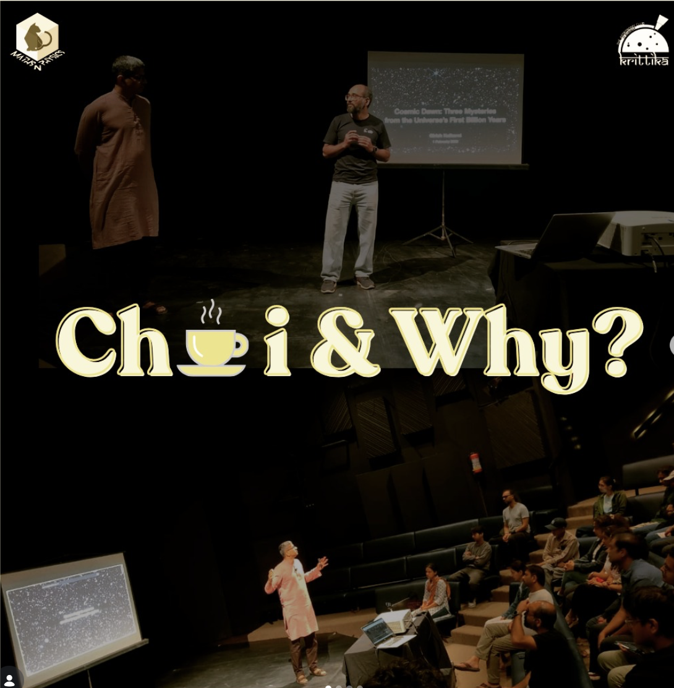
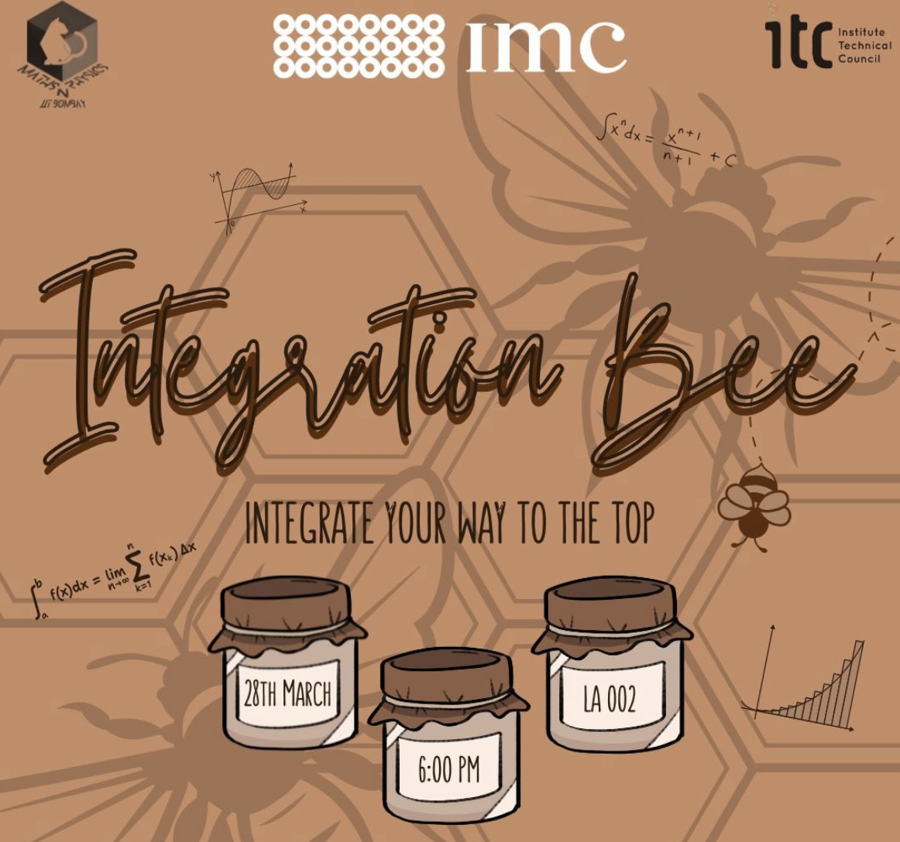
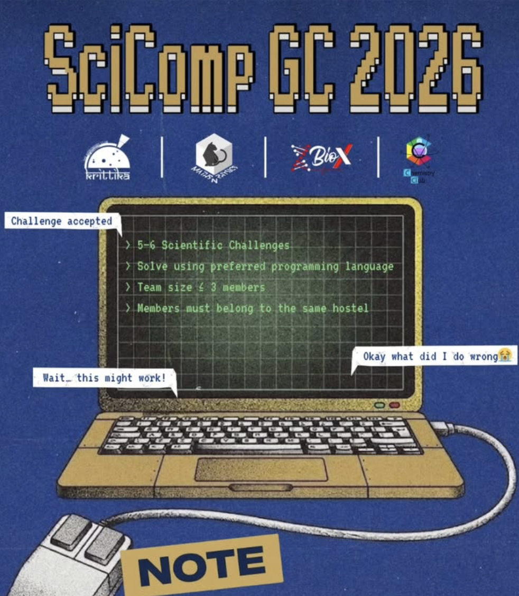
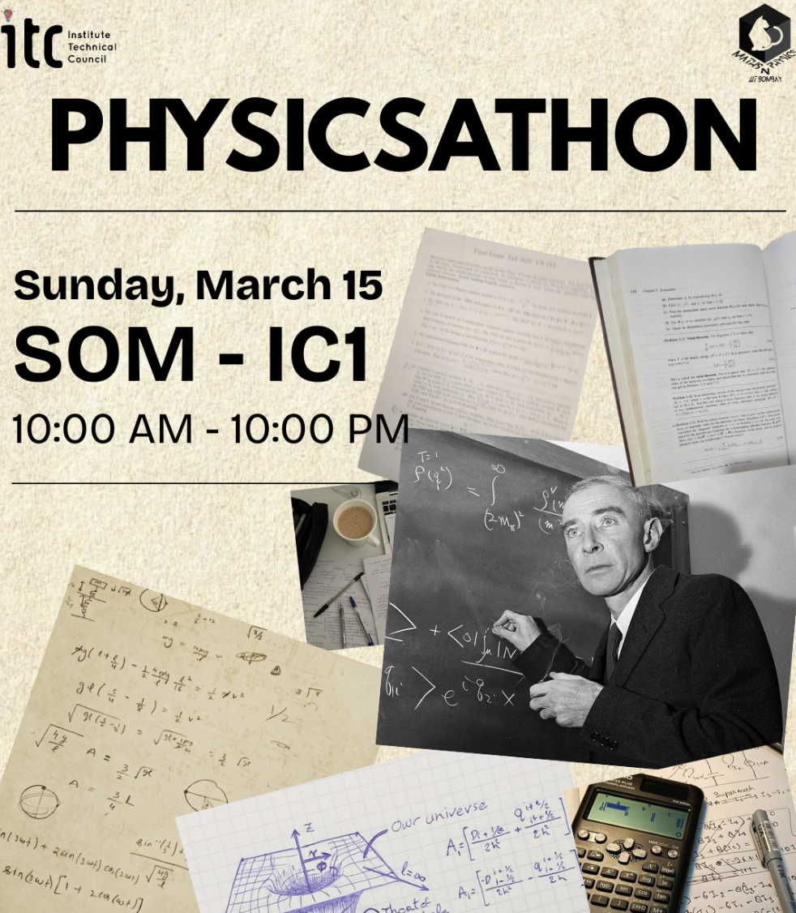
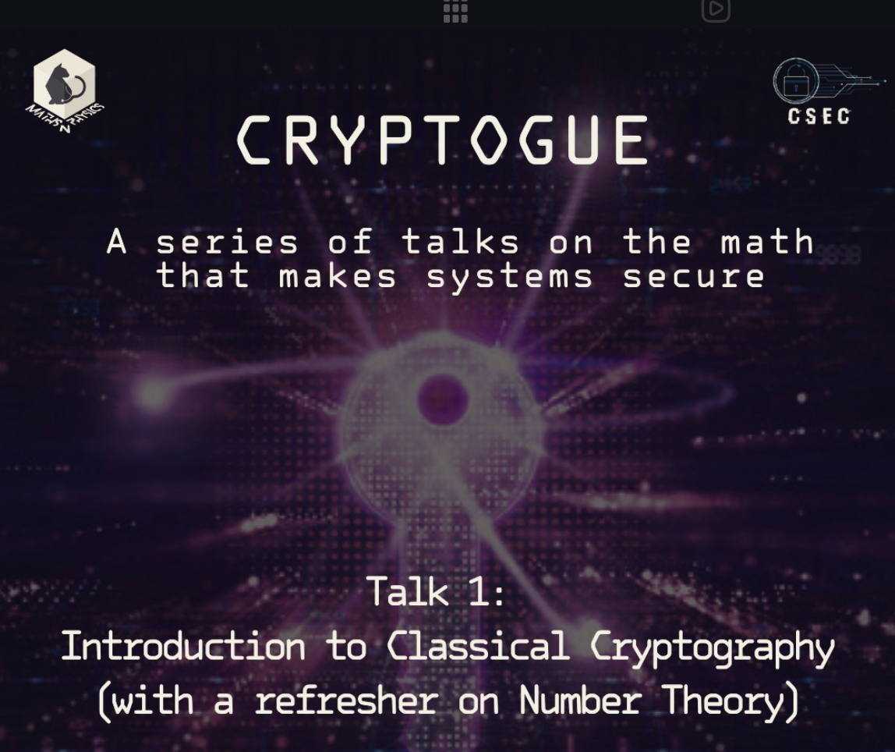
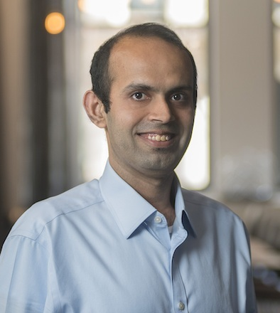
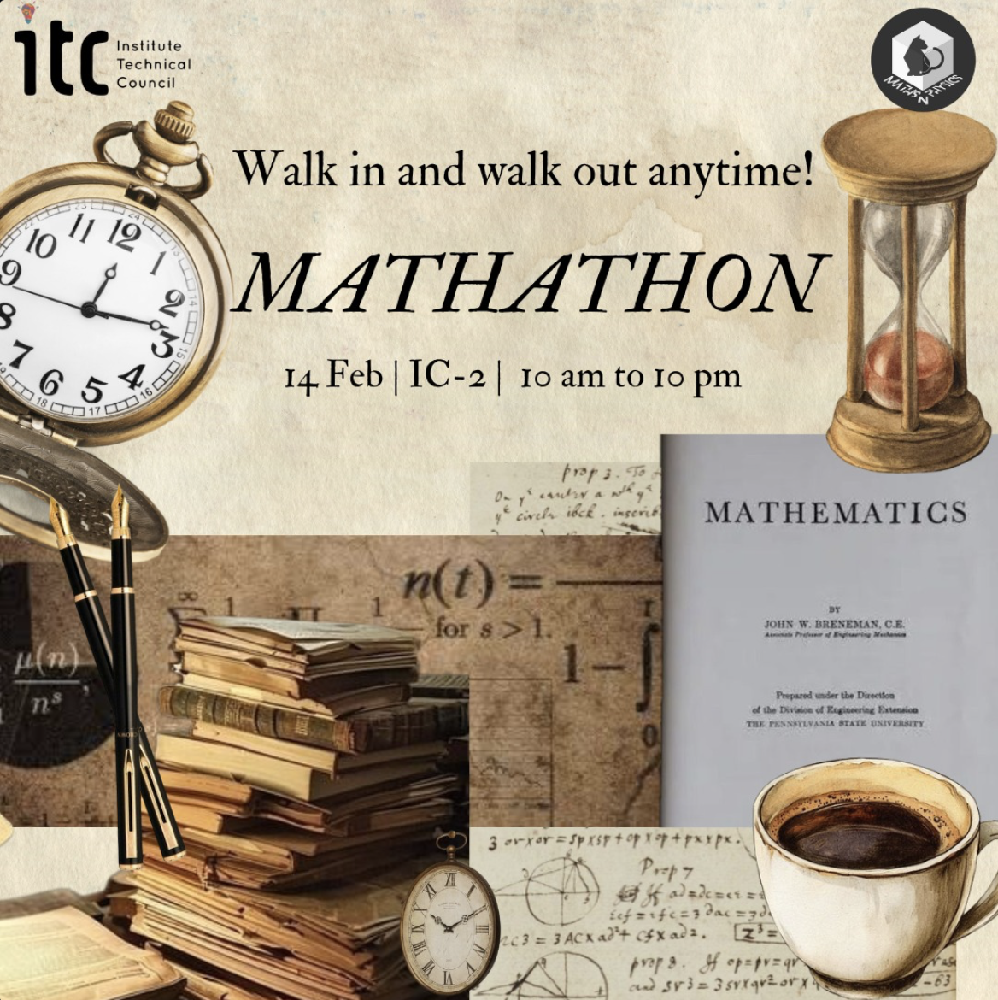
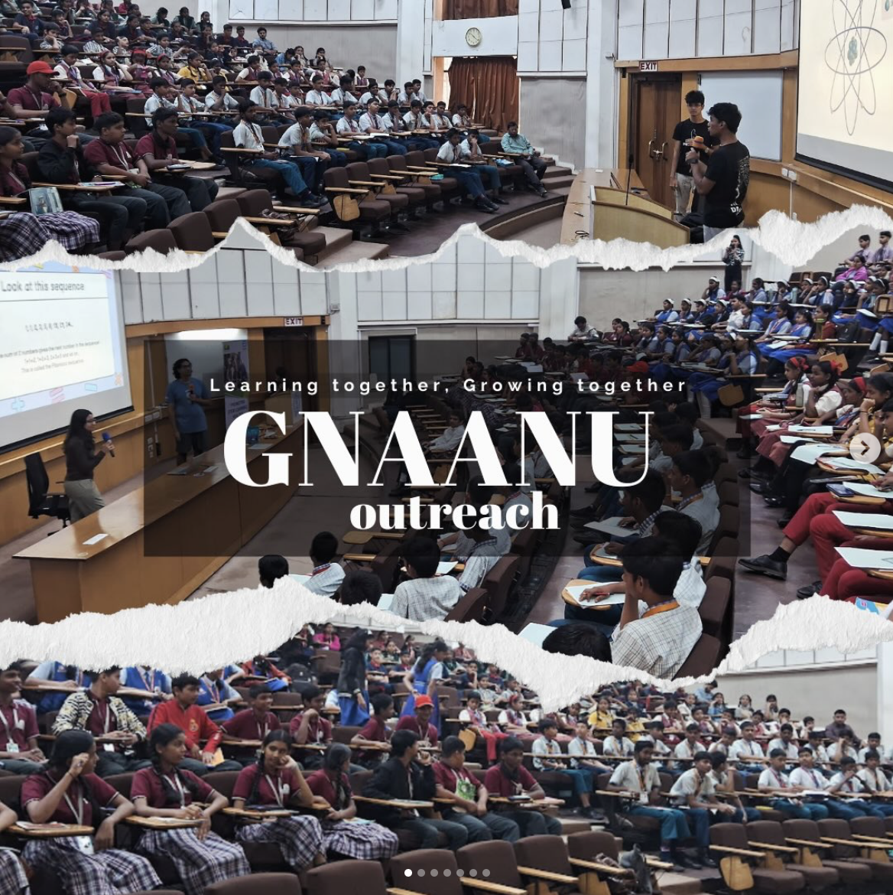
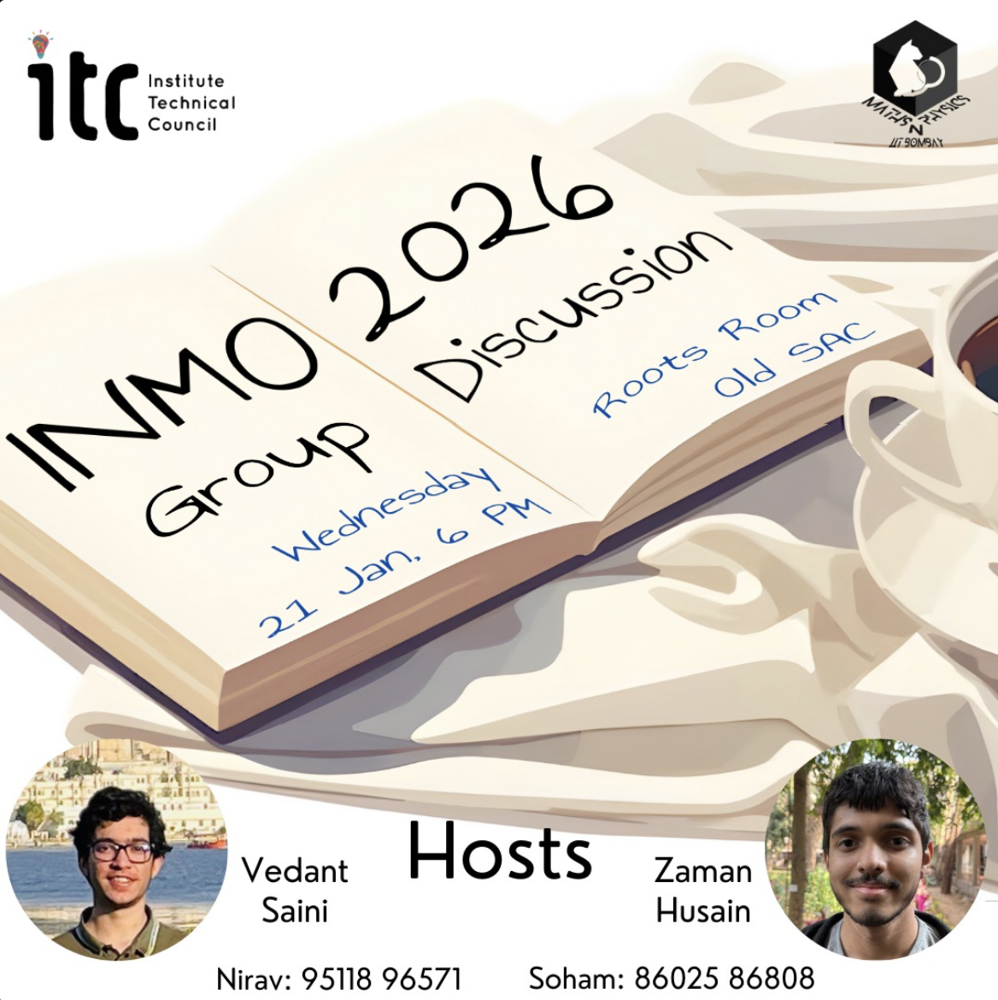
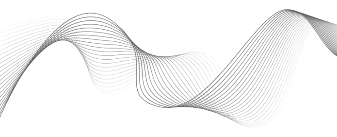

A scroll through everything MnP has been cooking up this year.

1 April 2026
MnP and Krittika organized a trip this January to attend Chai n Why at Prithvi Theatre, Juhu, featuring a fascinating talk on cosmology by Professor Girish Kulkarni.

28 March 2026
Talks featuring students and researchers discussing cool math and physics topics.

18-22 March 2026
Participants were given 5–6 scientific problems across different domains, and the goal was simple; solve them using code. No fixed approach or language, just how well one can think, experiment, and make things work.

15 March 2026
The event was designed for those who get a kick out of applying the laws of mechanics, analyzing electrodynamical systems, and reasoning through the chaos of thermodynamics.

13 March 2026
A series of fascinating and accessible discussions on cryptography and the mathematics behind it. Conducted in collaboration with the Cyber Security Community, the first week started with “Introduction to Classical Cryptography”, along with a short refresher on Elementary Number Theory.

12 March 2026
The Interplay of Data, Analysis, and Fast Algorithims: this talk explored how data sparsity arises in such key problems and introduce key ideas like high-rank decompositions and sparse representations that enable such fast algorithms.

14 February 2026
A day-long math olympiad event built for people who genuinely enjoy sitting down with tough, satisfying problems.
28 January 2026
From Simple Laws to Complex Matter: An Introduction to Condensed Matter Physics

23 January 2026
We had the opportunity to organise a workshop for underprivileged school students in collaboration with the NGO GNAAN U, with the aim of sparking curiosity and showing how science connects to everyday life.

21 January 2026
It was that time of the year for us to get cozy and brainstorm over the 2026 INMO problems. The event unfolded to be an exciting evening with hearty conversations and exchanges with something to learn for all.
